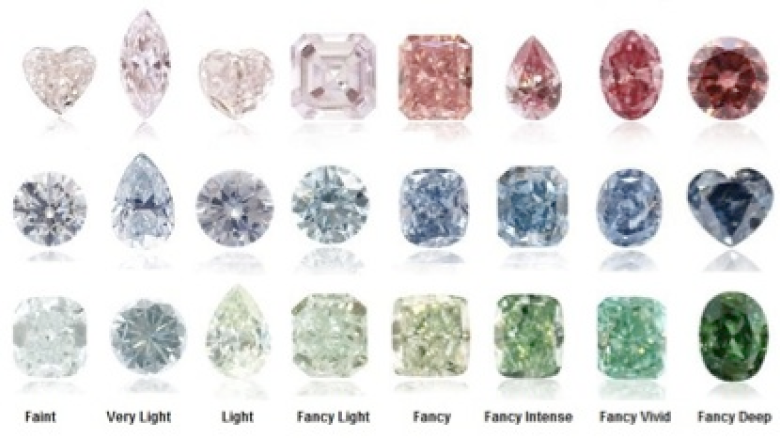

Most diamonds are colorless or slightly yellow, but diamonds also appear in other colors, such as colored diamonds in red, blue, or pink colors. In the traditional sense, the highest grade color of colorless diamonds is D color, followed by E, F, G, H, I, J, K, L, etc., the later the grade, the yellower the color. Diamond color grading is very difficult, especially high-grade D, E, F, etc., only in a fully enclosed dark room of a professional diamond laboratory, under the illumination of a 6500-degree color temperature diamond lamp, after a professional diamond grading division Only by comparing with the colorimetric stone can we determine the level of the diamond itself. If it is a diamond after setting, let alone D, E, and color diamonds in the sun, even if the differences between I, J, K, and colors in the eyes of ordinary people are subtle. Summing up 20 years of work experience, reveal a little trick to share with you. The picture below is the three samples we selected after mounting, which are D color, H color and J color. The first group of photos is the effect of comparison in the laboratory environment, the result is that the color difference is small. The second group of photos is the effect of wearing under ordinary lights, the result is almost no difference. So in the case of limited budget, don't pursue color too much, because the color difference of diamond after setting is very small. This allows the remaining money to be used to purchase larger diamonds. In addition to diamonds of conventional colors, various colored diamonds have recently become a hot topic. For example, the Pink Star, which set a record at the Sotheby ’s auction recently, is not in the traditional color grading. The color of colored diamonds has its own grading standard, which can be divided according to its color concentration Faint <micro> → Verylight <light> → Light <light> → Fancylight <light color> → Fancy <middle color> → Fancydark <dark color> → Fancyintense <dark color> → Fancyvivid <glow color> → Fancydeep <deep color> .
Although deep color is the most intense color among all colored diamonds, the colorful visual effect is the most gorgeous and the most valuable level among all colored diamonds. How is the color of colored diamonds formed? Different reasons cause different colors of colored diamonds. When a nitrogen atom replaces some of the carbon atoms in the diamond, a yellow diamond is formed; when a boron element is absorbed, a blue diamond is formed; when the diamond lattice is twisted, it forms powder according to its different twisted form Diamond or green diamond; black diamond is simply caused by the inclusion of dark content. According to expert statistics, every 100,000 gem-quality diamonds are produced, of which only one colored diamond is possible, and the probability of excavation is only 1/100000. Among the colored diamonds, golden yellow, brown, and green are more common. Others such as pink, red, and blue are relatively rare, and they are often encountered and unavailable.